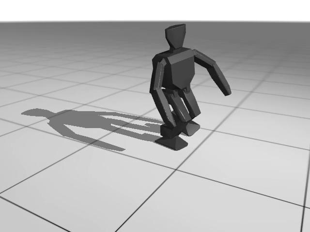
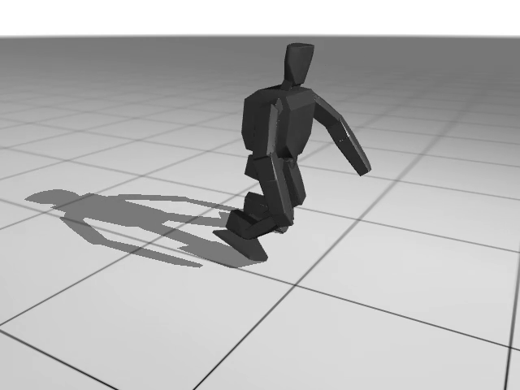

⚠ 이 페이지는 2026-08-11 스냅샷입니다. STAGE 0 측정값과 1-A1(발목 유무) 결정은
지금도 유효합니다. 하지만 아래 STAGE 1의 구체적 비율 수치(머리 35% · 다리두께 25% · 발면적 40%,
"4-B/4-C1/4-C2" 섹션)는 2026-08-22 사용자 지시로 폐기되고 완전히 새로운 비율 체계(머리=1
기준 단위)로 교체됐습니다 — 그 결과가
숏다리 vs 롱다리(2026-08-23) 페이지입니다.
이 페이지는 STAGE 1이 어떤 과정을 거쳤는지 보여주는 역사 기록으로 남겨둡니다.
3robot_project
소형 이족보행 캐릭터 로봇 — 시뮬레이션 전용 · MuJoCo / MJX
최종 갱신 2026-08-11
Stage 0
스택 검증
Stage 1
다리·비율 탐색
Stage 2
모방학습 검증
Stage 3
표현 채널 분리
Stage 4
트리거 동작
Stage 5
모캡 리타게팅
Stage 6
통합
STAGE 0 — 스택 검증 + 측정 완료

stand / crouch

swing phase
#
측정 항목
값
①
역진자 시간상수 τ
0.165 s
②
제어 주파수 vs τ
50 Hz → τ당 8.3회 통과
③
고관절 최대 벌림각 (외전)
89°까지 접촉 없음
④
명령 속도 상한
1.107 m/s
⑤
머리 접지각 (전/후/좌/우)
80° / >89° / 84° / 84°
측정 대상 OP3(기성 모델). 영상: logs/result/stage0/rollout0~2.mp4
STAGE 1 — 다리 골격 탐색 진행중
1-A1: 발목 유무 (candidate A 발목없음+롤오버밑창 vs candidate B 발목pitch) 완료 — B 승
4-B: 몸 비율(머리% × 발목구성) 완료 — A트랙 확정값: 머리 35%
하드웨어 트랙 결정 (2026-08-13, 사용자 지시): RL 성능은 B(발목)가 항상 이기지만, 실기 액추에이터 2개 비용 때문에 이후 STAGE 1 튜닝은 후보 A(발목 없음)만 진행한다. 목표는 정해진 예산 안에서 유연한 움직임 구현 — A로 형태를 다 확정한 뒤 최종적으로 B와 애니메이션 품질을 비교해서, 육안으로 확연히 부족하면 그때 발목을 추가한다. 진행 중: head35_A/head45_A(40% 근처 세밀조정) → 다리두께 → 발면적, 전부 후보 A로.
머리%(A)
episode_length
reward
30
500
407
35
660
569
40
375
308
45
127 (전체 최저)
96
50
523
428
✓ 절대 크기 확정 — 전체 높이 40cm, 머리 45% / 몸통·다리 각 27.5%
✓ candidate_A.xml, candidate_B.xml 작성 + 정적 안정성 검증
✓ envs/biped_rl.py 순수 RL 환경 (보상 튜닝 1~5번, GPU 스모크테스트 통과)
✓ 두 후보 10M-step PPO 학습 — 동일 보상·하이퍼파라미터·시드 → 후보 B(발목 pitch) 승
✓ 4-B 몸 비율 그리드 — 8개 전부 완료 (로컬 CPU, 20분/7분 페이싱)
· 다음: §4-B 3단계(몸통:다리 비율 스윕) 또는 5%p 세밀 조정 — 사용자 판단 대기
Colab GPU가 35시간(7회 연속) 막혀서 로컬 CPU(SB3)로 전환해 완주. 컴퓨터 과열 방지 20분/7분 페이싱, 실측 fps 1889~2858(예상보다 훨씬 빠름).
변형
episode_length
reward
head30_A
500
407
head30_B
956 (1위)
873
head40_A
375
308
head40_B
690
601
head50_A
523 (A중 1위)
428
head50_B
930
824
head60_A
137 (최저)
97.3
head60_B
803
682
발목 우위(B>A)가 모든 비율에서 일관됨 — 비율과 관절구성이 이 축에서는 독립적. 머리 60%는 A/B 공통 최악(관성/무게중심). A 최적점(50%)과 B 최적점(30%)이 다름 — 40%에서 양쪽 다 국지적 저하가 있어 세밀 스윕 후보. 상세: docs/robot_spec.md §4-B.
디버깅 메모: 첫 학습 시도에서 무릎 관절 기본각(0)이 관절 한계 경계값과 정확히 일치해 CBF 페널티가 상시 발동하는 버그를 발견 → 관절 범위를 [-0.1745, 2.0944]로 확장해 여유를 줌. 이어서 "무릎을 구부린 자세가 더 안정적이지 않을까" 시도했다가 오히려 하체 수평 오프셋 때문에 즉시 전도되는 걸 확인하고 편 다리 자세로 되돌림 — 최종적으로는 관절 범위 확장만으로 충분했다.
스텝
candidate A
candidate B
0
reward −15.1, len 32
reward 1.3, len 37
~2.3M
reward 10.8, len 35
reward 20.2, len 42
~5.7M
reward 31.2, len 53
reward 506.5, len 661
~8.0M
reward 294.5, len 370
reward 845.5, len 978
~9.2M (피크)
reward 331.8, len 500
reward 788.5, len 979
10~10.3M (최종)
reward 103.2, len 182
reward 355.8, len 475
candidate A는 6.9M~9.2M 구간에서 episode_length 53→500까지 급등했다가 182로 되돌아옴. candidate B는 3.4M~8.0M 구간에서 73→978까지 A보다 더 빠르고 더 크게 도약했고, 최종값도 훨씬 높다(475 vs 182) — 발목 관절이 균형 학습에 실질적으로 도움이 된다는 결론. B는 세션 유실 후 체크포인트(1.1M)에서 재개해 총 학습량이 A보다 약 11% 많지만(~11.1M), A의 예산(10M)을 다 쓰기도 전인 8.0M 시점에 이미 A의 최종 성능을 크게 앞질렀으므로 결과를 뒤집을 정도는 아니다.
절차 변경 (2026-08-11, 사용자 지시): 원래는 1-A1 승자만 고정하고 이후 스윕을 진행할 계획이었지만, 관절 구성과 몸 비율이 서로 독립적인지 직접 확인하기 위해 4-B(몸 비율)·4-C(다리·발 형상)를 후보 A/B 둘 다에 대해 각각 실행하기로 했다. 이 지점부터 실험 횟수가 약 2배로 늘어난다.
학습된 정책 영상 — 후보 A vs B 비교 (둘 다 머리 30%)
같은 몸 비율(머리 30%)에서 발목 유무만 다른 두 정책의 최종 체크포인트를 굴린 15초 롤아웃.
트래킹 카메라로 로봇을 계속 따라간다. scripts/render_policy.py로 생성.
발목 없는 쪽(A)은 롤오버 밑창(캡슐 3개, 접지 면적이 좁고 계속 옮겨감), 발목 있는 쪽(B)은
평평한 판 밑창(발이 평평할 때 훨씬 넓은 면적이 한번에 닿음) — 접지 면적 차이가 그대로 보인다.
후보 A (발목 없음, 롤오버) — 12.6초에 넘어짐
후보 B (발목 pitch, 평면) — 15초 완주
둘 다 완전히 자연스러운 보행은 아니다 — 뒤뚱거림이 섞여 있고 팔·목은 아직 관절이 없는 고정 링크(STAGE 3 이전)라 그대로 붙어있다. A는 좁은 접지 면적 때문에 균형이 쉽게 무너지고, B는 넓은 접지 면적 덕에 15초 내내 버틴다 — episode_length 수치 차이(500 vs 956)가 영상으로도 확인된다.
4-C1: 다리 두께 (후보A, 머리35% 고정) 완료 — 25% 확정
다리두께
episode_length
reward
비고
15%
161
117
얇을수록 불안정
25%
660
569
= head35_A 재사용
35%
645
502
4-C2: 발 면적 (후보A, 머리35%/다리두께25% 고정) 완료 — 40% 확정
발 길이(다리길이 대비)
episode_length
reward
20%
158
110
30%
476
409
40%
781
678
50%
450
362
역U자형 패턴 — 발이 작으면 지지 다각형이 좁아 불안정하고, 너무 크면(50%) 다시 나빠진다(관성·발-발 충돌 추정). 40%가 최적.
STAGE 1 최종 (후보 A 트랙) 확정
머리35% · 몸통:다리 1:1 · 다리두께25% · 발면적40% · 발목없음(롤오버 밑창). models/character.xml로 통합, 정적 안정성 검증 완료.
아래는 이 최종 조합(footarea40_A 체크포인트)의 15초 롤아웃 — 끝까지 안 넘어짐.
다음 계획: 이 최종 형태에 발목(후보 B)을 붙인 버전과 애니메이션/움직임 품질(가동범위, 부드러움)을 비교해서, 육안으로 A가 확연히 부족하면 그때 발목을 추가한다 (§4-A1 "하드웨어 트랙 결정" 참고). 미실행 항목: 1-A2(hip 축 실험), 몸통:다리 세부 스윕 — 알고 건너뜀.
운영 메모 — Colab 세션 안정성
STAGE 0~1 진행 중 Colab 세션이 총 6회 중 3회 학습 도중/직후 죽었다 (원인 불명, idle 타임아웃과 무관한 경우도 있음). 한 번은 체크포인트 동기화를 깜빡해 candidate A의 진행분(약 30~40%)을 통째로 날린 적이 있다. candidate B는 체크포인트 재개(--load_checkpoint_path)로 손실 없이 완주.
✓scripts/colab_sync_checkpoints.sh로 확인할 때마다 로컬 동기화 (재발 방지)
✓ GPU 세션 생성 실패(할당량 소진) 시 로컬로 즉시 전환 — 비교 공정성을 위해 두 후보 모두 같은 백엔드로